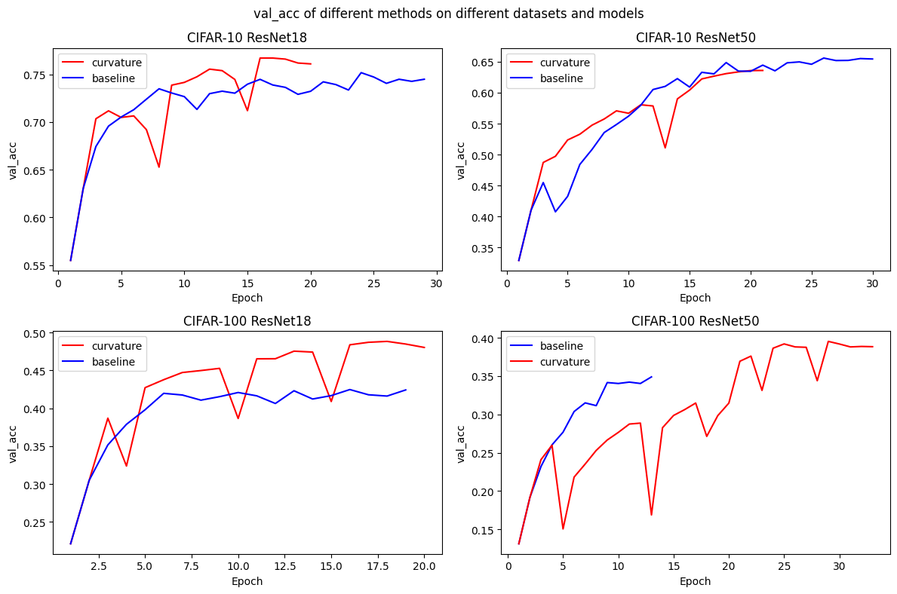
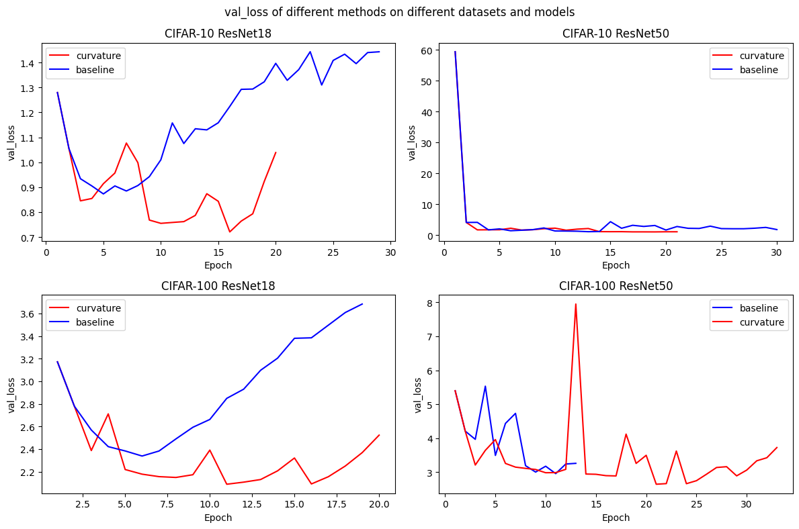

In the course "Optimization in Deep Learning", it was mentioned that the maximum eigenvalue of a quadratic form represents curvature. A larger curvature implies that the local minimum the model has entered might suffer from poor generalization performance. Instead, we want to find a flatter minimum—one with smaller curvature.
We can implement the following strategy:
I tested this approach using SGD on small-scale vision models. On both the CIFAR-10 and CIFAR-100 datasets, it yielded a 2% to 3% improvement in validation accuracy.


The reason the number of epochs varies for each experiment here is that I've set the convergence criterion as follows: the validation set accuracy must fluctuate by less than 1% over a span of five epochs.
While pre-learning the Shampoo optimizer today(June 10, 2026), I noticed that it has already leveraged second-order information. The authors mentioned that computing second-order information is prohibitively expensive in large-scale model scenarios. This inspired me(trying to earn survival space for my idea...): we could potentially estimate the maximum eigenvalue of the Hessian matrix by utilizing the two preconditioner matrices, A and B, maintained by Shampoo. According to an LLM I consulted, the computational overhead of calculating the maximum eigenvalue on top of the existing Shampoo framework would be virtually negligible.